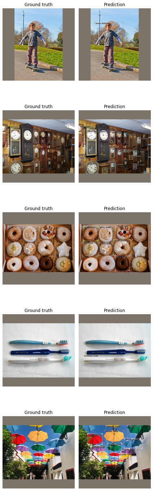

Use a trained model for inference
Installing IceVision and IceData
If on Colab run the following cell, else check the installation instructions
# IceVision - IceData - MMDetection - YOLO v5 Installation
!wget https://raw.githubusercontent.com/airctic/icevision/master/install_colab.sh
!chmod +x install_colab.sh && ./install_colab.sh
Imports
As always, import everything from IceVision:
from icevision.all import *
Loading the model
We're going to use the model trained on the getting started tutorial.
Saving/Loading a model
Save your model with torch.save(model.state_dict(), PATH). Take a look at this tutorial for more info on how to save/load models.
The first thing we need is the ClassMap used during training. The model we're going to use was trained on the Pets dataset, so we can easily grab that:
class_map = icedata.pets.class_map()
Recreate the model used in training:
from icedata.utils import load_model_weights_from_url
model_type = models.torchvision.faster_rcnn
backbone = model_type.backbones.resnet50_fpn()
model = model_type.model(backbone=backbone, num_classes=len(class_map))
And now load the model weights (commonly refered as state_dict in Pytorch).
In our case, the weights are stored in the cloud, Pytorch is amazing and provides us with a function to directly load model weights from an URL.
Where to host your model
You can save your model directly on github via a "release"
Simply go to https://github.com/<ACCOUNT>/<REPO>/releases/new and upload the model as a new release. This will generate a direct link for downloading the model.
WEIGHTS_URL = 'https://github.com/airctic/model_zoo/releases/download/m3/pets_faster_resnetfpn50.zip'
load_model_weights_from_url(model, WEIGHTS_URL, map_location=torch.device('cpu'))
If your weights are stored locally, you simply need to do: state_dict = torch.load(<PATH>)
Model device
Notice that we're asking to load the weights on CPU with map_location. It's common to do inference in CPU, but you can easily change to GPU if you want.
Transforms
Generally speaking, we normally use on inference the same transforms we used in the validation set.
A transform like normalize is always required, but for some models, a transform like resize is optional. For instance, the model used in this tutorial accepts any image resolution, try playing around with different transforms and observe how they change the model results.
Let's use the same transforms used in the validation set:
infer_tfms = tfms.A.Adapter([*tfms.A.resize_and_pad(size=384), tfms.A.Normalize()])
Data
Obviously we need some images to perform inference, how you get this images heavily depends on your use case.
For this tutorial, let's grab an image from an URL:
import PIL, requests
def image_from_url(url):
res = requests.get(url, stream=True)
img = PIL.Image.open(res.raw)
return np.array(img)
image_url = "https://petcaramelo.com/wp-content/uploads/2018/06/beagle-cachorro.jpg"
img = image_from_url(image_url)
show_img(img);

Try it out
Try experimenting with new images, be sure to take one of the breeds from class_map (or not, if you are curious to see what happens).
Whenever we have images in memory (numpy arrays) we can use Dataset.from_images to easily create a Dataset from it:
infer_ds = Dataset.from_images([img], infer_tfms)
Predict - All at once
Simply call predict:
preds = model_type.predict(model, infer_ds, keep_images=True)
Predict - In batches
If the memory is not enough to predict everything at once, break it down into smaller batches with infer_dataloader:
infer_dl = model_type.infer_dl(infer_ds, batch_size=1)
preds = model_type.predict_from_dl(model=model, infer_dl=infer_dl, keep_images=True)
0%| | 0/1 [00:00<?, ?it/s]
Visualize
This step will probably not be the same for your use case, but for quickly visualizing the predictions we can use show_preds:
show_preds(preds=preds)

Happy Learning!
If you need any assistance, feel free to join our forum.